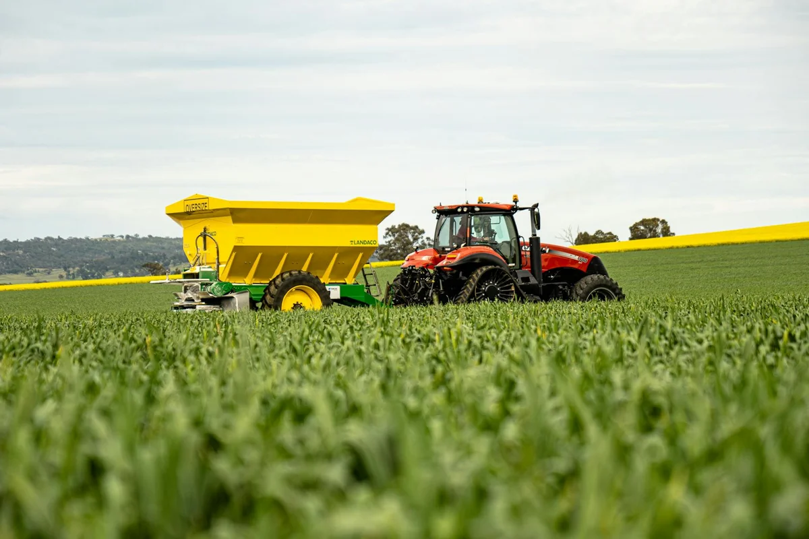

Overseeding in Winnipeg typically runs $120–$400 for an average residential lot, depending on lawn size, the condition of the existing grass, and how much prep work is needed. Here's what actually drives the price — and how to know if your lawn needs it this spring.
Want an exact price for your yard? Get a quote now — we'll price it out for your specific property, fast.
What Does Overseeding Cost in Winnipeg?
Most Winnipeg homeowners pay between $150 and $350 to have their lawn overseeded professionally. Here's how the numbers typically break down by lot size:
| Lawn Size | Typical Cost Range |
|---|---|
| Small lot (under 2,500 sq ft) | $120 – $180 |
| Average lot (2,500 – 5,000 sq ft) | $180 – $280 |
| Large lot (5,000 – 8,000 sq ft) | $280 – $400+ |
These figures cover seed, labour, and spreading. They don't include power raking, aeration, or fertilizer — which most professionals strongly recommend doing first, because overseeding into an unprepared lawn is largely wasted effort. If you're booking a full spring lawn package, bundling those services together almost always brings the per-service cost down and gets you a significantly better result.
Overseeding without aerating first is one of the most common money-wasters in Winnipeg lawn care. Seed that lands on compacted clay soil simply doesn't germinate reliably.
What Affects the Price of Overseeding
Several factors will push the number up or down from that range:
- Lawn size — the single biggest cost driver. Larger properties need more seed and more labour time.
- Existing turf condition — thin, patchy, or dead areas require heavier seeding rates and sometimes a soil amendment to improve germination.
- Prep work needed — if your lawn needs power raking and aeration first (it almost always does), those are typically quoted as separate line items. Skipping prep to save money almost always means redoing the job.
- Seed quality — budget seed mixes ($8–$12/kg) germinate unevenly and often include fillers. Quality cool-season blends suited to Winnipeg's zone 3 climate — Kentucky Bluegrass, Perennial Ryegrass, Fine Fescue — cost more but establish reliably and hold through Manitoba winters.
- Access and yard layout — tight side yards, slopes, or lots of garden beds and obstacles add labour time and can increase the quote.
When to Overseed in Winnipeg
The best window for overseeding in Winnipeg is late April through mid-May, right after power raking and aeration are complete. The soil is warming after the snowmelt, moisture levels are naturally high, and enough of the growing season remains for new grass to establish well before summer heat stress sets in.
A second reliable window opens from late August through mid-September. Fall overseeding is ideal if your spring lawn didn't fill in as well as expected, or if you lost patches to summer drought or grub damage. Cooler temperatures reduce seedling stress, and consistent late-season rainfall helps germination without daily watering on your part.
Avoid overseeding in June and July in Winnipeg. Heat stress hits seedlings before their roots are established, and you'll lose most of the seed. The money and effort spent mid-summer almost never pay off — wait for the fall window instead.
One timing note: spring overseeding slots at reputable companies fill up fast. The late-April window for aeration, power raking, and overseeding is the same one all of Winnipeg is competing for. If you want a date in May, book in March or early April.
We can price this out for your Winnipeg property in minutes. Request a quote and we'll get back to you same day.
Signs Your Winnipeg Lawn Needs Overseeding
Overseeding isn't only for lawns that are half-dead. Your Winnipeg lawn probably needs it this spring if:
- More than 30% of the lawn is bare or noticeably thin — past that threshold, overseeding outperforms spot-repair
- Grass looks sparse after winter even though you mow and water regularly through the season
- You had areas die off from grub damage, drought stress, or heavy foot traffic last summer
- You just completed power raking and exposed bare soil — this is the perfect moment to overseed
- Weeds are taking over in thin areas — dense, healthy turf crowds out dandelions and crabgrass naturally
- Your lawn is more than three years old and has never been overseeded
Winnipeg's heavy clay soil, freeze-thaw cycles through winter, and short growing season put real stress on residential turf year after year. Even a well-maintained lawn thins out gradually. Overseeding every 2–3 years is legitimate preventive maintenance, not a sign that something went wrong.
What's Included When You Hire a Pro
A proper professional overseeding in Winnipeg should include:
- Pre-service walkthrough — a quick assessment to identify bare patches and areas needing heavier application
- Seed selection — a cool-season mix matched to your yard's sun and shade balance and appropriate for Manitoba's zone 3 climate
- Calibrated spreading — even application across the full lawn, not hand-broadcasting which leaves clumps and gaps
- Post-seed instructions — a clear watering schedule and mowing timing while germination is underway (typically 10–21 days)
Reputable companies coordinate overseeding with aeration on the same service visit so seed drops directly into the aeration holes and makes solid soil contact — the single most important factor for germination success. Seed sitting on the surface of compacted clay has a fraction of the take-up rate.
If you're already booking a spring cleanup, overseeding is a natural add-on. See our spring and fall cleanup packages — overseeding can be scheduled alongside cleanup, power raking, and aeration in one coordinated visit.
DIY vs Professional Overseeding: What's Worth It?
DIY overseeding costs roughly $40–$80 in seed for an average Winnipeg lot, plus your time. It makes sense when you're doing light touch-up on a mostly healthy lawn that you've already aerated — a small bare patch after a rough winter, for example.
Where DIY falls short:
- Consumer spreaders apply unevenly, leaving visible stripes or clumped areas that look worse than before
- Buying quality cool-season seed in small quantities is expensive per-kilogram compared to trade pricing
- You still need a power rake and aerator for prep — rentals run $80–$150 per day each, and returning equipment eats a half-day
- Timing the seed correctly to soil temperature and moisture takes experience — early seeding into cold clay soil barely germinates
For anything more than minor spot-seeding, hiring a professional is usually more cost-effective once you factor in rentals, quality seed, and your time. The seed establishes properly on the first attempt, and our basic lawn care in Winnipeg includes post-overseeding mowing on a schedule that protects new growth from being cut too short before it's rooted. If you want to keep your lawn on a regular program after overseeding, weekly grass cutting in Winnipeg is easy to add to the same account.
Get a Clear Price for Your Winnipeg Yard
No pressure, no runaround. You'll get a clear price based on your actual property — and we'll let you know if prep work is needed first.
Get a Free Quote